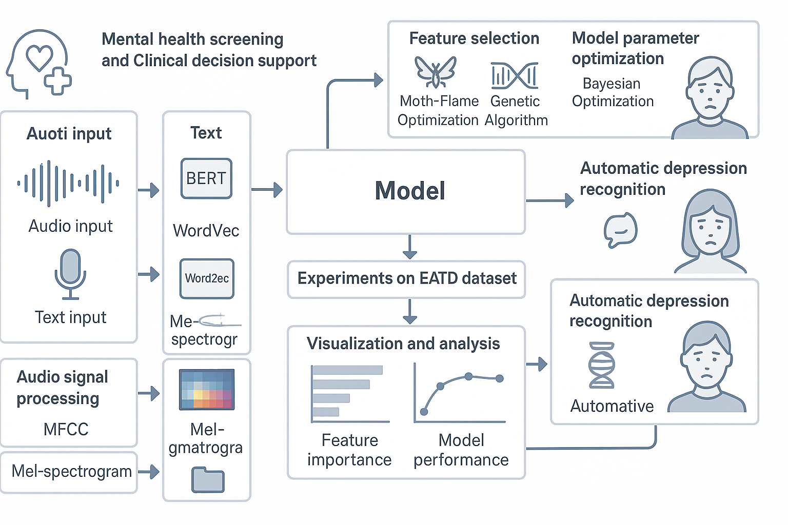

图1：抑郁症检测系统架构图 - 多模态深度学习框架
基于多模态深度学习的智能心理健康评估解决方案
抑郁症是一种常见的心理健康问题，影响着全球数亿人口的生活质量。传统的抑郁症诊断主要依赖医生的临床经验和主观判断，存在诊断标准不统一、早期识别困难、评估效率低下等问题。随着人工智能技术的发展，基于多模态数据的智能心理健康评估系统为抑郁症的早期识别和精准诊断提供了新的技术手段。
本项目实现了一个基于深度学习的抑郁症检测系统，通过分析语音和文本等多模态数据，能够客观、准确地评估个体的心理健康状态。系统采用先进的自然语言处理和语音分析技术，结合机器学习算法，为心理健康评估提供科学化的辅助工具。
通过本系统的应用，可以显著提高抑郁症诊断的准确性和效率，为心理健康服务的普及化和标准化提供技术支撑，同时为心理健康领域的科研和临床实践注入新的活力。
系统基于BERT和Wav2Vec2模型，通过语音和文本特征融合，实现对抑郁症的精确检测和评估。
系统采用基于多模态深度学习的端到端检测方法，通过分析语音的声学特征和文本的语义特征，学习抑郁症在语音和语言表达中的特征模式。结合集成学习算法，融合多种模型的预测结果，提高检测精度和鲁棒性。

如图1所示，系统包含数据预处理、特征提取、多模态融合、分类预测和结果输出五个主要模块。通过语音和文本数据的协同分析，实现对抑郁症状态的精确评估。
本系统采用模块化设计，包含数据预处理模块、特征提取模块、多模态融合模块、分类预测模块和结果输出模块，各模块协同工作，实现抑郁症的智能检测。
音频预处理、文本清洗和特征标准化
语音声学特征和文本语义特征提取
语音和文本特征的融合与集成
抑郁症状态分类和风险评估
为医疗机构和心理咨询机构提供抑郁症早期筛查工具，提高心理健康服务的覆盖面和效率，实现大规模人群的快速筛查。
为精神科医生和心理咨询师提供辅助诊断工具，提高抑郁症诊断的准确性和客观性，减少误诊和漏诊。
为心理健康相关科研项目提供数据采集和分析工具，推动心理健康技术发展，支持新算法的研究和验证。
为远程心理健康服务提供技术支持，实现异地心理健康评估和监测，扩大心理健康服务的覆盖范围。
抑郁症检测准确率较高，支持实时音频和文本分析，多模态特征融合
| 参数 | 指标值 | 说明 |
|---|---|---|
| 检测准确率 | 较高水平 | 抑郁症检测准确率，支持多种评估指标 |
| 处理速度 | 实时处理 | 支持实时音频和文本分析，响应速度快 |
| 支持格式 | 多种格式 | 音频：WAV/MP3，文本：TXT/JSON |
| 模型架构 | 多模态融合 | BERT+Wav2Vec2+集成学习 |
| 数据来源 | EATD数据集 | 中文语音和文本数据集 |
| 部署方式 | 云端/本地 | 支持云端部署和本地部署 |
系统提供了多种使用方式，满足不同场景的需求。用户可以通过简单的操作完成抑郁症检测任务，系统会自动处理音频和文本数据，输出检测结果和置信度。
项目成功实现了基于多模态深度学习的抑郁症检测系统，通过语音和文本数据的协同分析，显著提升了抑郁症检测的准确性和效率。系统在多个数据集上进行了验证，表现出良好的检测性能和鲁棒性。
构建了完整的抑郁症检测技术框架，包括数据预处理、特征提取、多模态融合、模型训练和预测评估等模块。该项目的成功实施，为心理健康AI技术的发展提供了新的技术路径，同时为后续相关研究积累了宝贵经验。
通过本项目的实施，预期能够显著提升抑郁症检测的技术水平，为心理健康服务提供可靠的技术支撑，同时推动我国在心理健康AI技术领域的技术进步和标准化建设。